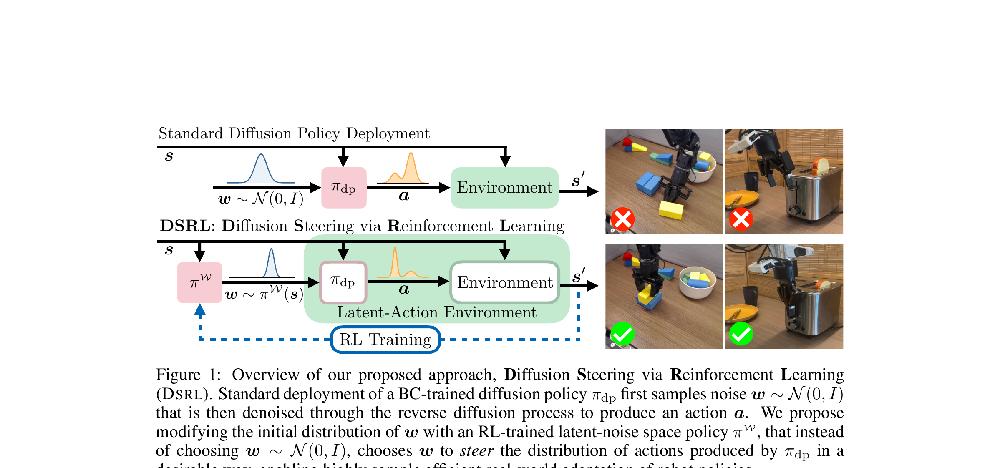

Steering Your Diffusion Policy with Latent Space Reinforcement Learning
Wagenmaker 等 · UC Berkeley / UW · 2025 · arXiv:2506.15799 · Zotero SB6NAK8S
把‘微调生成策略’改写为‘控制生成策略的输入’，以适配能力换取稳定、低算力和黑盒兼容。
§1 Introduction：作者为什么必须做这篇工作
行为克隆 diffusion policy 的优势是多模态与稳定，弱点是新场景失败后通常还要再收人类演示。直接微调去噪网络需要通过长采样链反传，既慢又容易破坏基座。作者问：能否把 diffusion policy 当黑盒，只学习“该给它什么噪声”来 steering？
DSRL 把初始高斯噪声从固定分布换成可学习 latent-noise policy。基座 diffusion policy 冻结，latent actor 根据状态选择噪声，经过原去噪器映射为动作。于是 RL 发生在低维、平滑的潜空间，并可用常规 SAC 高效复用真实数据。
展开原文 · 核心动机
“adapting the BC policy by running RL over its latent-noise space”
§2 Related Work：它接在哪些路线之后
Diffusion Policy 用条件去噪生成动作 chunk；DPPO 通过整个去噪 MDP 更新基座，表达力强但反传链长。Q-guidance 在测试时用 critic 改动作，不改变策略。
DSRL 更像在冻结生成器前加一个可学习控制器：只要能黑盒调用 diffusion policy 就能使用。它与 residual RL 相似，但残差加在 latent noise，而非物理动作，因此更容易保持动作自然性。
§3 问题设定：状态、动作与反馈
状态先进入 latent actor，产生非标准噪声；冻结 diffusion policy 把该噪声去噪成动作。环境奖励训练 latent actor/critic，基座权重完全不动。
§4 方法总览：沿原图走一遍
上一节确定了学习接口；现在看论文原图，追踪观测如何变成动作、环境反馈又如何回到可训练模块。

1. 冻结 BC diffusion policy
先冻结已经能生成自然动作 chunk 的 diffusion policy。冻结意味着后续 RL 无法破坏其去噪器，也把训练成本限制在小网络；代价是新技能必须存在于基座可达的动作流形中。
输入是什么：随机噪声，以及当前画面、语言指令或机器人状态等条件信息。噪声只是生成过程的起点，不是机器人真的要执行的动作。
这一步究竟做什么：先冻结已经能生成自然动作 chunk 的 diffusion policy。冻结意味着后续 RL 无法破坏其去噪器，也把训练成本限制在小网络；代价是新技能必须存在于基座可达的动作流形中。
输出到哪里：一个或多个候选未来、动作或轨迹，以及必要的中间状态。这个结果会交给下一步“latent actor 选择条件噪声”继续处理。
为什么不能省略：随机起点允许模型表达多种合理结果；逐步生成则把无结构噪声限制到训练数据支持的动作或视频分布。
2. latent actor 选择条件噪声
latent actor 根据当前状态输出初始噪声分布，而不再固定采样标准高斯。它学习的是‘从生成器的哪个入口出发’，因此能改变最终动作模式，却不需要反传或改写去噪网络。
输入是什么：来自上一步“冻结 BC diffusion policy”的产物：一个或多个候选未来、动作或轨迹，以及必要的中间状态。本步骤还会按论文设置读取当前条件、时间步或训练信号。
这一步究竟做什么：latent actor 根据当前状态输出初始噪声分布，而不再固定采样标准高斯。它学习的是‘从生成器的哪个入口出发’，因此能改变最终动作模式，却不需要反传或改写去噪网络。
输出到哪里：一套固定且可复现的输入条件，后续所有模型都必须在这套条件下生成或行动。这个结果会交给下一步“黑盒去噪器把噪声映射为动作”继续处理。
为什么不能省略：模型不能高效地直接在所有原始像素和长序列上推理；这一步把信息压成后续模块能处理、比较和复用的形式。
3. 黑盒去噪器把噪声映射为动作
黑盒 diffusion policy 接收状态和所选噪声，经原采样过程得到真实动作。对 RL 来说这是环境前的一段固定非线性映射；latent actor 的选择好坏最终由动作执行后的回报判断。
输入是什么：来自上一步“latent actor 选择条件噪声”的产物：一套固定且可复现的输入条件，后续所有模型都必须在这套条件下生成或行动。本步骤还会按论文设置读取当前条件、时间步或训练信号。
这一步究竟做什么：黑盒 diffusion policy 接收状态和所选噪声，经原采样过程得到真实动作。对 RL 来说这是环境前的一段固定非线性映射；latent actor 的选择好坏最终由动作执行后的回报判断。
输出到哪里：一个或多个候选未来、动作或轨迹，以及必要的中间状态。这个结果会交给下一步“用 SAC 在潜空间按环境回报更新”继续处理。
为什么不能省略：随机起点允许模型表达多种合理结果；逐步生成则把无结构噪声限制到训练数据支持的动作或视频分布。
4. 用 SAC 在潜空间按环境回报更新
SAC 在潜空间用 replay 反复更新 actor 与 critic。critic 评价某个潜噪声经基座生成后能否成功；这种 off-policy 复用带来真机样本效率，同时保持基座参数完全不动。
输入是什么：来自上一步“黑盒去噪器把噪声映射为动作”的产物：一个或多个候选未来、动作或轨迹，以及必要的中间状态。本步骤还会按论文设置读取当前条件、时间步或训练信号。
这一步究竟做什么：SAC 在潜空间用 replay 反复更新 actor 与 critic。critic 评价某个潜噪声经基座生成后能否成功；这种 off-policy 复用带来真机样本效率，同时保持基座参数完全不动。
输出到哪里：参数得到更新的模型，或能供下一轮训练使用的新监督信号。这是图中这条链路的最终产物，随后会进入真实执行、模型更新或指标评测。
为什么不能省略：前面的数据或分数本身不会自动改变模型；必须通过损失函数把误差信号变成参数更新。
§5 机制细拆：为什么这个接口可能有效
Q 值评价由某个潜噪声最终生成的动作；SAC 直接学习潜噪声分布，无需穿过基座参数。
仅更新轻量 latent actor–critic，diffusion policy 保持只读。
把‘微调生成策略’改写为‘控制生成策略的输入’，以适配能力换取稳定、低算力和黑盒兼容。
§6 目标函数：公式逐项读
下面的教学化表达抓住论文的主要更新方向；读它时不要只看符号，要检查回报作用在哪个变量、哪些部分保持冻结。
- $\pi_\phi(z|s_t)$
- RL 学到的潜噪声策略。
- $z_t$
- 不再固定为标准高斯的初始噪声。
- $f_{DP}$
- 冻结的 diffusion policy 去噪映射。
- $a_t$
- 保持在基座动作流形附近的最终动作 chunk。
§7 训练与评测：数字在什么条件下成立
仿真控制、真实机器人任务以及预训练 generalist policy 适配；比较基座 BC、动作空间 residual RL、直接 diffusion fine-tuning 与 DSRL。
| 学习接口 | 状态先进入 latent actor，产生非标准噪声；冻结 diffusion policy 把该噪声去噪成动作。环境奖励训练 latent actor/critic，基座权重完全不动。 |
|---|---|
| 信用分配 | Q 值评价由某个潜噪声最终生成的动作；SAC 直接学习潜噪声分布，无需穿过基座参数。 |
| 更新范围 | 仅更新轻量 latent actor–critic，diffusion policy 保持只读。 |
| 实验覆盖 | 仿真控制、真实机器人任务以及预训练 generalist policy 适配；比较基座 BC、动作空间 residual RL、直接 diffusion fine-tuning 与 DSRL。 |
§8 结果怎么读：证据与归因
论文显示 DSRL 以较少在线样本改善真实任务，并且黑盒冻结基座仍能适配；最有说服力的对照是同等交互预算下 latent steering 与动作残差/全参微调。
§9 复现与工程检查
固定 diffusion sampler、随机种子与推理步数；记录 latent 分布是否偏离标准高斯；同时评估基座原任务，确认 steering 没有永久遗忘。
- 先复现冻结的 SFT/BC 基线，再打开 RL 或偏好更新。
- 同时记录环境步、墙钟时间、人工干预、策略版本和推理延迟。
- 逐任务保存失败轨迹，避免平均成功率掩盖分布偏移。
§10 适用边界与研究启发
潜空间只允许选择基座本来能生成的行为；若预训练完全缺失关键技能，steering 无法凭空创造；额外 latent actor 增加一次推理。